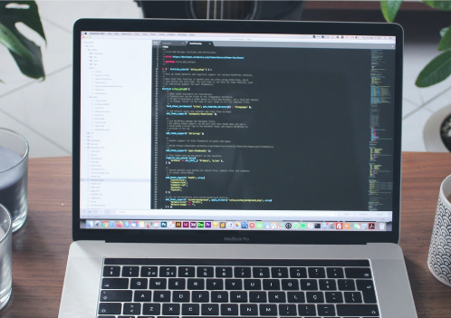
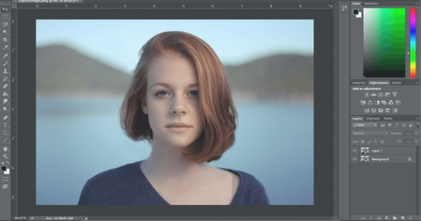
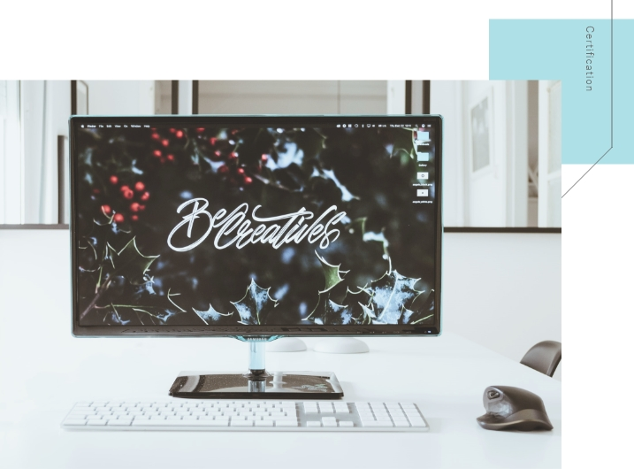

訓練内容概要
ホーム / 訓練内容概要
未経験からでもWEBデザイナーへ
就職・転職できる職業訓練校
知識ゼロから始める！
本校の受講生の約８０％が未経験からのスタートです。 「今」必要な技術・知識を、最新のツールやソフトウェアを使い、基礎からしっかり学ぶことができます。
現役講師から学べる！
第一線で活躍する現役クリエイターから指導を受けることができ、就職に必要な基本的・専門的スキルを「現場視点」で考えられたカリキュラムを通して、身に付けることができます。
実践的なカリキュラム！
日々進化し続けるWeb業界。 時代に合わせた言語を学習できるように、常に訓練内容をしっかりと考慮して授業内容を構成しております。
学習するツール・ソフト

エディタ＆拡張機能
プログラミング言語を記述するためのソフトとしてエディタの使い方を学びます。
エディタはGitHub製のATOMや、Microsoft製のVisual Studio Codeを使用します。また、EMMETやライブプレビューの拡張機能や、Sassなどのメタ言語のように近年一般的に利用されている環境で学習します。

プログラミング言語
ホームページを制作する時に使用するHTML(HTML5)やCSS(CSS3)、Javascript等を学習します。 基本的なアニメーション効果などを付けるjQueryやSass (scss)といった拡張言語(メタ言語)についても学習します。また、近年ではクラウド化が進んでいるため、webアプリケーションなどもこの技術を用いて作られております。
Photoshop ⁄ XD
Adobe製の画像編集・デザインソフト'Photoshop'と、WebサイトのUI デザインを直感的に作成することができるソフト'XD'を使用していきます。 アカウントをお渡しするので訓練期間中はご自宅のパソコンでも使用可能です。加えて、同社のモバイルアプリなども連動して活用していきます。
HTML&CSS
ウェブサイトの基本を学ぶ
Webサイトの基本的な仕組みから、ホームページの基礎である「HTML5」と「CSS3」を基本文法から学び、 自己紹介サイトや商用サイトの制作課題を通して実践的なコーディング技術を総合的に学習します。 Microsoftが開発しているソースコードエディタである「Visual Studio Code」を使用します。
WEBデザイン
Photoshopを使ってデザインの基本を学ぶ
「Photoshop」を基本的な操作から応用法まで学んでいき、体系的な知識・操作を身に着けていきます。 またWEBサイト・アプリの制作全般に適した総合的なデザインツールである「Adobe XD」も基礎から学び、 デザイン・レイアウトを総合的に学習します。

グループ制作実習
コーポレートサイト制作実習
グループでの模擬実習を行います。 デザイナー・コーダー・ディレクターと役割分担をし、実際に講師を客先としてサイトマップ、ワイヤーフレーム、デザインカンプ、コーディングを打ち合わせし、より実務に近い形でウェブ制作を行います。 コンペという形で最後にプレゼンテーションを行います。
Javascript
サイトに動きをつける言語の学習
「JavaScript」とは、Webサイトやシステムの開発に使われているプログラミング言語です。 特に、Webのフロントエンジニアには欠かすことのできない必修スキルのひとつです。 本実習では実際にブラウザ上で動くアプリケーションを作りながら、JavaScriptでプログラムを書けるような技術を習得します。
レスポンシブデザイン
多くの画面に対応したデザイン制作を学ぶ
レスポンシブデザインは、閲覧ユーザーの画面サイズに合わせてページレイアウトを最適化するデザインのことを指します。 本実習ではPC版、タブレット版、モバイル版ページのすべてがきちんと表示されるように、Webサイトにレスポンシブデザインを実装する方法を学びます。
Webサイト企画/制作
学習の成果として創作物を作る
今までの集大成として、学んだことすべてを盛り込んだWebサイトの制作を行います。 サイトマップ、ワイヤーフレーム、デザインカンプ、コーディングの制作を行い、就職活動に必要なポートフォリオサイトの制作を実際に行います。
取得できる資格
WSSはサーティファイ認定校
資格試験合格率は98%です！
WEBクリエイター能力認定試験 HTML5（エキスパート級・スタンダード級）が受けられます。
Webクリエイター能力認定試験は、Webクリエイターに必要とされる、Webサイト制作のデザイン知識およびWebページのコーディング能力を測定・評価する認定試験で、 本校で学んだ知識を資格として証明することができます。
※こちらは授業とは別に任意受験となる為、別途料金が発生いたします。

卒業生の声
本校より卒業した生徒達は、様々な仕事の現場で活躍しています。
卒業生にインタビューを実施し、受講生・卒業生を代表して、メッセージをいただきました。
ここでは一部をご紹介します。
学習経験も、就業先での経験も、決して1人では得られなかった糧です。
訓練を経ても、コーディングもデザインも、Webページをつくる表と裏はどちらも変わらず魅力的です。社会人になって感じたデザインカレッジの最大の魅力は「実際の仕事を意識した教育」。 スキルはもちろん、社会人に必要とされる基礎力を在学中に身につけられました。運用・更新ディレクションの業務の面白さ、重要性も経験することができました。 訓練でのしっかりとしたWeb制作スキル・知識の基礎固めは、こうして就業先のさまざまなシーンで手応えとなって返ってきました。
後輩のみなさんにも夢に向かって精一杯努力してほしいと思います。
山田 佐紀
Webデザイナー
2019年11月卒業
田中 由衣
Webディレクター
2020年2月卒業
入学前はデザインの専門知識は全くありませんでしたが、とにかく一から教えてもらえる、先輩や先生に気軽に質問できる学内環境で学べました。
Webデザイナーを目指すきっかけになったのは、大学2年生から始めたWeb制作やブランディングを手掛ける会社でのアルバイト。 「将来の選択肢が増えるかもしれないし、ちょっと体験してみようかな？」という気持ちで始めました。
チーム制作や卒業制作など他の専攻とコラボレーションするなど現場に近い学びかたができ、 現場に必要なコミュニケーション能力を磨くことができたのが良かったです。
分からないこともとことん相談できる雰囲気がありました。
安心して相談できる先生がWSSにはいます。自分でやり遂げるというやる気だけあればあとはなんとかなると思います。 それだけ持っていれば全部楽しいです！
不安なことは何でも相談するのがいいです。 もちろん本人の努力は必要不可欠ですが、サポートしてくれる環境は整っていると感じる環境でした。 作業に手詰まりを感じても手助けしてくれる環境があるので、1人で悩むということはありません。 先生や友達とたくさん話せば、一人では見えないことや分からないことも解決できるようになりますよ。
吉田 勇気
Webコーダー
2020年7月卒業
まずは説明会にご参加ください。
受講生募集期間中の火曜・木曜に、少人数制の説明会を実施しております。
就職、転職に向けて手に職をつけたい方、リモートワーク、在宅ワークをクリエイティブ分野で叶えたい方など、まずは説明会に参加して学校の雰囲気をつかんでみましょう！